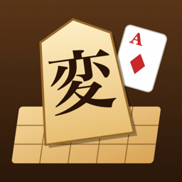

変則将棋
安南・トランプ将棋・詰将棋の変則将棋ゲーム集（iPhone）
遊び方
盤の大きさ・駒・ルールをちょっとずつ変えた将棋を、CPU（よわい・ふつう・つよい）か、2人で1台のスマホで対局します。変則ルールでの詰将棋（64問）も遊べます。
- 対局する：ルールを選ぶと、駒の動きと遊び方の説明が出ます。CPU と対局するか、2人で1台かを選んで始めます
- 安南将棋：すぐうしろに味方の駒がいると、その駒の動きを借ります（安北はすぐ前、安東は右どなり、安西は左どなり）
- トランプ将棋：めくったカードの数字の筋にいる駒だけ動かせます。王手のとき・その筋で指せる手がないときは、何を指してもかまいません
- 変則詰将棋：攻め方は毎回王手をかけて、決められた手数で詰ませます。💡ヒント・↻やりなおし・📖答えがあります
よくある質問
CPU が強すぎる・弱すぎる
対局の前の画面で、CPU の強さを「よわい・ふつう・つよい」から選べます。本将棋は盤が大きいので、CPU が考えるのに少し時間がかかります。
音を消したい
画面右上のスピーカーのボタンで、音のオン・オフを切り替えられます。
記録を消したい・引き継ぎたい
解いた詰将棋や成績は、この iPhone の中にだけ保存しています。アプリを削除すると記録も消えます。ほかの端末への引き継ぎにはまだ対応していません。
忍・砲・蛙はどんな駒？
このアプリのオリジナルの駒です。忍は桂馬の跳び方を8方向に、蛙は縦横ななめにちょうど2マス跳び、砲は縦横にすべって、取るときだけ1枚はさんで撃ちます。対局の前の説明に、動ける場所の図があります。
お問い合わせ
不具合やご要望は、メールでお知らせください。お使いの iPhone の機種と iOS のバージョンを書いていただけると助かります。